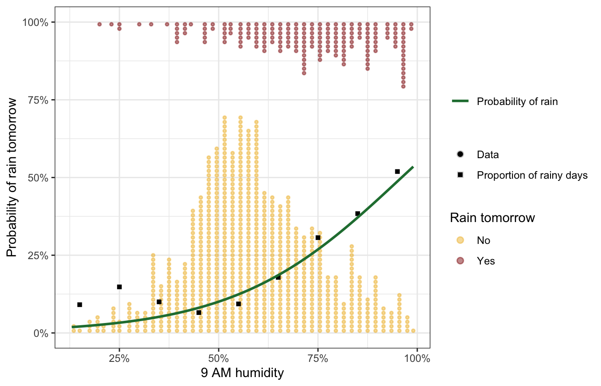
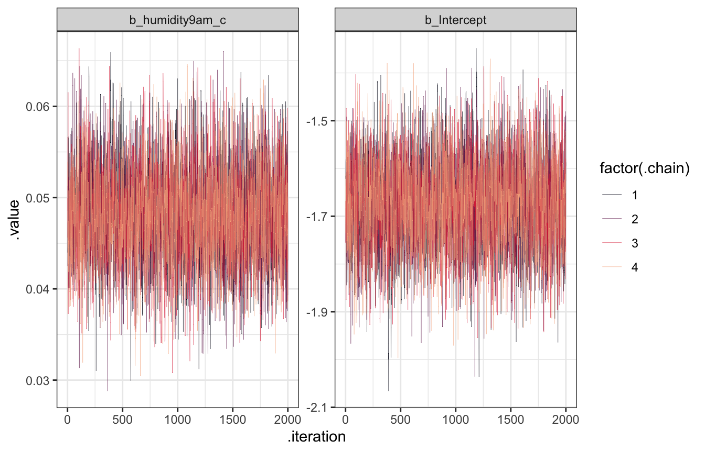
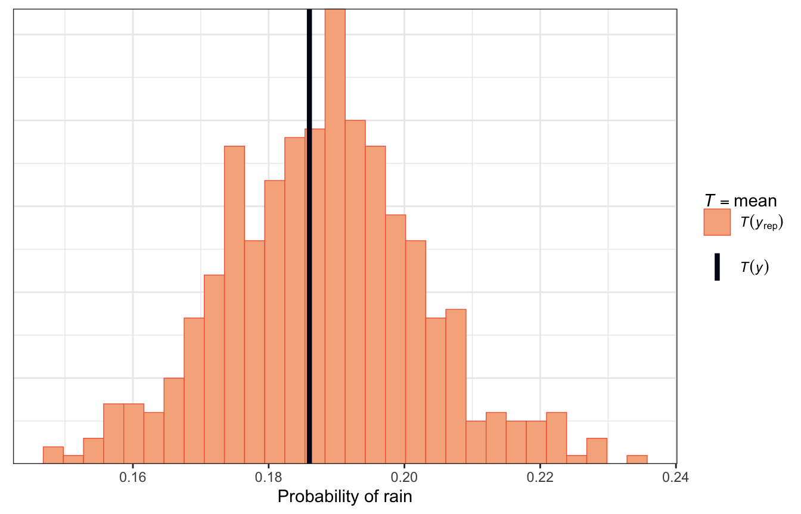

library(bayesrules)
library(tidyverse)
library(brms)
library(cmdstanr)
library(rstanarm)
library(marginaleffects)
library(broom)
library(broom.mixed)
library(parameters)
library(tidybayes)
library(ggdist)
library(patchwork)
library(latex2exp)
library(scales)
# Plot stuff
clrs <- MetBrewer::met.brewer("Lakota", 6)
theme_set(theme_bw())
# Tell bayesplot to use the Lakota palette for things like pp_check()
# bayesplot::color_scheme_set(clrs)
# Tell bayesplot to use the viridis rocket palette for things like pp_check()
viridisLite::viridis(6, option = "rocket", end = 0.85, direction = -1) |>
# Take off the trailing "FF" in the hex codes
map_chr(~str_sub(., 1, 7)) |>
bayesplot::color_scheme_set()
# Seed stuff
set.seed(1234)
BAYES_SEED <- 1234
# Data
data(weather_perth, package = "bayesrules")
weather <- weather_perth %>%
select(day_of_year, raintomorrow, humidity9am, humidity3pm, raintoday) |>
mutate(across(c(humidity9am, humidity3pm),
~scale(., scale = FALSE), .names = "{col}_centered")) |>
mutate(across(c(humidity9am, humidity3pm),
~as.numeric(scale(., scale = FALSE)), .names = "{col}_c")) |>
mutate(raintomorrow_num = as.numeric(raintomorrow) - 1)
extract_attributes <- function(x) {
attributes(x) %>%
set_names(janitor::make_clean_names(names(.))) %>%
as_tibble() %>%
slice(1)
}
unscaled <- weather %>%
select(ends_with("_centered")) |>
summarize(across(everything(), ~extract_attributes(.))) |>
pivot_longer(everything()) |>
unnest(value) |>
split(~name)
# Access these things like so:
# unscaled$humidity3pm_centered$scaled_centerReading notes
Logistic regression
The general setup
In this example we want to model if it’s going to rain tomorrow (raintomorrow) based on three predictors:
- \(X_1\) (
humidity9am): today’s humidity at 9 AM - \(X_2\) (
humitidy3pm): today’s humidity at 3 PM - \(X_3\) (`raintoday``): binary indicator if it rained today
13.1: Pause: odds and probability
Probability is the percent chance that something will happen, or \(\pi\).
The odds of an event is the ratio of the probability that it will happen vs. the probability that it won’t happen, or
\[ \text{odds} = \frac{\pi}{1 - \pi} \]
Probabilities are limited to 0–1. Odds can range from 0 to infinity. This makes interpretation a little weird.
If the probability of rain tomorrow is \(\pi = 2/3\), the probability that it doesn’t rain is \(1 - \pi\), or \(1/3\). The odds are thus
\[ \frac{2/3}{1/3} = 2 \]
…which means that it’s twice as likely to rain than not rain.
If the probability of rain tomorrow is \(\pi = 1/3\), the probability that it doesn’t rain is \(1 - \pi = 2/3\), so the odds are
\[ \frac{1/3}{2/3} = \frac{1}{2} \]
…which means that it’s half as likely to rain than not rain
And if the probability is \(\pi = 1/2\), the probability that it doesn’t rain is \(1 - \pi = 1/2\), so the odds are
\[ \frac{1/2}{1/2} = 1 \] In general:
- If odds are < 1, \(\pi < 0.5\)
- If odds are > 1, \(\pi > 0.5\)
- If odds are 1, \(\pi = 0.5\)
13.2: Building the logistic regression model
Prelude: Intuition behind GLM links
In general GLMs let us model non-linear data in linear ways by transforming the outcome to a more linear scale. With Poisson, we logged \(\lambda\) to force it to be above zero. With logistic regression, raw probabilities tend to be really curvy and sigmoidal, and they’re bound between 0 and 1, and linear regression can’t handle bounds like that.
We can convert the probabilities to odds to get out of the 0–1 world, but we still face substantial nonlinearities (since high probabilities approach infinity and low probabilities approach zero). We can log the odds to force the data to be more linear. Our GLM link is thus a logit function:
\[ \log \left( \frac{\pi_i}{1 - \pi_i} \right) = \beta_0 + \beta_1 X_{i1} + \beta_2 X_{i2} + \dots \]
Or more simply:
\[ \operatorname{logit}(\pi_i) = \beta_0 + \beta_1 X_{i1} + \beta_2 X_{i2} + \dots \]
logit_df <- tibble(humidity9am = seq(0, 100, length.out = 101),
logits = seq(-4, 6, length.out = 101)) |>
mutate(odds = exp(logits)) |>
mutate(probs = plogis(logits))
p1 <- ggplot(logit_df, aes(x = humidity9am, y = probs)) +
geom_line(size = 1, color = clrs[3]) +
labs(title = "Probabilities",
subtitle = "Can't be modeled linearly; too curvy and bound between 0–1",
x = "9 AM humidity",
y = TeX("$\\pi$")) +
theme(plot.title = element_text(face = "bold"),
axis.title.y = element_text(angle = 0, hjust = 0))
p2 <- ggplot(logit_df, aes(x = humidity9am, y = odds)) +
geom_line(size = 1, color = clrs[2]) +
labs(title = "Odds",
subtitle = "No longer bound between 0–1, but still too curvy for linear models",
x = "9 AM humidity",
y = TeX("$\\frac{\\pi}{1 - \\pi}$")) +
theme(plot.title = element_text(face = "bold"),
axis.title.y = element_text(angle = 0, hjust = 0))
p3 <- ggplot(logit_df, aes(x = humidity9am, y = logits)) +
geom_line(size = 1, color = clrs[1]) +
labs(title = "Log odds (logits)",
subtitle = "Linear models are comfy and happy here",
x = "9 AM humidity",
y = TeX("$log \\left( \\frac{\\pi}{1 - \\pi} \\right)$")) +
theme(plot.title = element_text(face = "bold"),
axis.title.y = element_text(angle = 0, hjust = 0))
p1 / p2 / p3Prelude II: How to interpret logistic regression coefficients
Tip
See my guide here or my other guide here or this by Steven Miller for more on logistic regression coefficients.
Logit model coefficients can be reported as log odds (or logits) or odds (or odds ratios). We can get actual probabilities if use plogis() to calculate the inverse logit of the log odds, or we can calculate marginal effects.
fake_logit_data <- logit_df |>
mutate(raintomorrow_fake = map(probs, ~rbinom(15, 1, .))) |>
unnest(raintomorrow_fake)
ggplot(fake_logit_data, aes(x = humidity9am, y = raintomorrow_fake)) +
geom_dots(aes(side = ifelse(raintomorrow_fake == 1, "bottom", "top")),
pch = 19, color = "grey70", scale = 0.2) +
geom_smooth(method = "glm", method.args = list(family = binomial(link = "logit")),
size = 1, color = clrs[5], se = FALSE)model_example <- glm(raintomorrow_fake ~ humidity9am, data = fake_logit_data,
family = binomial(link = "logit"))
tidy(model_example)
## # A tibble: 2 × 5
## term estimate std.error statistic p.value
## <chr> <dbl> <dbl> <dbl> <dbl>
## 1 (Intercept) -3.65 0.201 -18.2 1.21e-73
## 2 humidity9am 0.0936 0.00461 20.3 1.12e-91
tidy(model_example, exponentiate = TRUE)
## # A tibble: 2 × 5
## term estimate std.error statistic p.value
## <chr> <dbl> <dbl> <dbl> <dbl>
## 1 (Intercept) 0.0260 0.201 -18.2 1.21e-73
## 2 humidity9am 1.10 0.00461 20.3 1.12e-91The intercept \(\beta_0\) is the log odds of the outcome when all other covariates are set to 0. In the fake data here, it’s -3.651. That makes no sense by itself, but we can exponentiate it (\(e^{-3.651}\)) and get an odds ratio of 0.026. That still doesn’t make sense for me (maybe some people do think in odds ratios?). We can convert the log odds value to a probability with \(\frac{e^{-3.651}}{1 + e^{-3.651}}\), or plogis(-3.651) in R: 0.025. That means that in this simulated data, there’s a 2.5% probability of rain when humidity is 0%.
- Log odds: \(-3.651\)
- Odds: \(e^{-3.651} = 0.026\)
- Probability: \(\frac{e^{-3.651}}{1 + e^{-3.651}} = 0.025\)
The slope \(\beta_1\) is the slope of the line on the log odds scale. A 1 percentage point increase in humidity is associated with a 0.094 increase in the log odds of rain. That makes no d**n sense (it compels me though).
We can exponentiate the coefficient (\(e^{0.094}\)) to get an odds ratio of 1.098, or the multiplicative change in odds. This is a little more usable (though not much): a 1 percentage point increase in humidity increases the odds of rain by 9.8%.
We can convert this coefficient to the probability scale with a little bit of fancy math. We can’t just stick the log odds into plogis() like we did with the intercept. We need to include details from the intercept in the calculation:
plogis(intercept + coefficient) - plogis(intercept)If we do that with these coefficients like plogis(-3.651 + 0.094) - plogis(-3.651), we get 0.0024, which means that the probability of rain increases by 0.24 percentage points for every 1 percentage point increase in humidity, on average.
The slope is different across the whole range of 9 AM temperatures though. Averaged across the whole range of humidity, the probability of rain increases by 0.24 percentage points, but the fitted curve is flat at the edges and steep in the middle. We can use marginaleffects() to find the slope at different values of humidity:
mfx_example <- marginaleffects(model_example,
newdata = datagrid(humidity9am = c(0, 30, 60, 90)),
by = "humidity9am")
summary(mfx_example)
## Term Contrast humidity9am Effect Std. Error z value Pr(>|z|)
## 1 humidity9am mean(dY/dX) 0 0.0023107 0.0003398 6.801 1.0395e-11
## 2 humidity9am mean(dY/dX) 30 0.0196926 0.0008739 22.535 < 2.22e-16
## 3 humidity9am mean(dY/dX) 60 0.0100879 0.0006424 15.704 < 2.22e-16
## 4 humidity9am mean(dY/dX) 90 0.0007781 0.0001500 5.188 2.1232e-07
## 2.5 % 97.5 %
## 1 0.0016448 0.002977
## 2 0.0179798 0.021405
## 3 0.0088289 0.011347
## 4 0.0004841 0.001072
##
## Model type: glm
## Prediction type: responseWhen humidity is 0, we get the same slope we found manually with plogis(), or 0.0023. As humidity increases, the slope increases too. When humidity is 30%, for instance, moving from 30% to 31% increases the probability of rain by 1.97 percentage points, while moving from 60% to 61% humidity increases the probability of rain by 1.01 percentage points. For fun we can plot the whole range of marginal effects:
# This does the same thing automatically:
# plot_cme(model_example, effect = "humidity9am", condition = "humidity9am")
model_example |>
marginaleffects(
newdata = datagrid(humidity9am = seq(0, 100, by = 1)),
by = "humidity9am") |>
mutate(across(c(dydx, conf.low, conf.high), ~ . * 100)) |>
ggplot(aes(x = humidity9am, y = dydx)) +
geom_ribbon(aes(ymin = conf.low, ymax = conf.high), alpha = 0.3, fill = clrs[1]) +
geom_line(size = 1, color = clrs[1]) +
labs(x = "9 AM humidity",
y = "Percentage point increase in probability of rain\n(marginal effect)")Defining the priors
To make the intercept more interpretable and to make Stan happier, we’ll work with a centered version of humidity rather than the 0–100 scale.
We’ll say that based on our prior knowledge about weather in Perth, there’s generally a 20% chance of rain on a given day. Since the intercept here is centered, it represents a typical day with an average level of morning humidity, so we just need to convert 20% to the log odds scale, either manually or with qlogis(0.2):
\[ \log \left( \frac{0.2}{1 - 0.2} \right) = -1.39 \]
qlogis(0.2)
## [1] -1.386294We need a range around that number. In the book they use 0.7 for \(\sigma\), making a range of -1.39 ± (2 * 0.7) = -2.786 and 0.014. If we convert those to probabilities, we get a range from 5% to 50%:
plogis(qlogis(0.2) - (2 * 0.7))
## [1] 0.05806931
plogis(qlogis(0.2) + (2 * 0.7))
## [1] 0.5034264That seems fine. Here’s what that looks like in plot form:
p1 <- ggplot() +
geom_function(fun = ~dnorm(., mean = -1.39, sd = 0.7),
size = 1, color = clrs[2]) +
scale_x_continuous(limits = c(-4, 1)) +
scale_y_continuous(labels = NULL, breaks = NULL) +
labs(x = "Log odds", y = NULL)
p2 <- tibble(x = seq(-4, 1, by = 0.01)) |>
mutate(y = dnorm(x, mean = -1.39, sd = 0.7)) |>
mutate(x_prob = plogis(x)) |>
ggplot(aes(x = x_prob, y = y)) +
geom_line(size = 1, color = clrs[2]) +
scale_y_continuous(labels = NULL, breaks = NULL) +
labs(x = "Probability", y = NULL)
p1 | p2For the \(\beta_1\) coefficient, we have a general idea that more humidity today will increase the probability of rain tomorrow, but no idea how big that effect actually is. In the book they say that the slope is around 0.07 with a \(\sigma\) of 0.035, so 0.07 ± 0.07, or 0–0.14.
Log odds make no sense so we can convert that range to odds ratios:
exp(0.07 - 0.07)
## [1] 1
exp(0.07 + 0.07)
## [1] 1.150274The odds of rain the next day thus increase by 0–15% for each percentage point increase in humidity. Here’s what that looks like:
p1 <- ggplot() +
geom_function(fun = ~dnorm(., mean = 0.07, sd = 0.07),
size = 1, color = clrs[3]) +
scale_x_continuous(limits = c(-0.35, 0.35)) +
scale_y_continuous(labels = NULL, breaks = NULL) +
labs(x = "Log odds", y = NULL)
p2 <- tibble(x = seq(-0.35, 0.35, by = 0.01)) |>
mutate(y = dnorm(x, mean = 0.07, sd = 0.07)) |>
mutate(x_odds = exp(x)) |>
ggplot(aes(x = x_odds, y = y)) +
geom_line(size = 1, color = clrs[3]) +
scale_y_continuous(labels = NULL, breaks = NULL) +
labs(x = "Odds ratio", y = NULL)
p1 | p2Official formal model
Here’s the formal model then:
\[ \begin{aligned} \text{Rain tomorrow}_i &\sim \operatorname{Bernoulli}(\pi_i) \\ \operatorname{logit}(\pi_i) &= \beta_{0c} + \beta_1\ \text{9 AM humidity}_i \\ \\ \beta_{0c} &\sim \mathcal{N}(-1.39, 0.7) \\ \beta_1 &\sim \mathcal{N}(0.07, 0.035) \end{aligned} \]
We should get a sense of how reasonable these priors are by simulating them. These plots seem good and fine.
priors <- c(prior(normal(-1.39, 0.7), class = Intercept),
prior(normal(0.07, 0.035), class = b, coef = "humidity9am_c"))
model_weather_prior_brms <- brm(
bf(raintomorrow ~ humidity9am_c),
data = weather,
family = bernoulli(link = "logit"),
prior = priors,
sample_prior = "only",
chains = 4, iter = 4000, seed = BAYES_SEED,
backend = "cmdstanr", refresh = 0
)
## Start samplingp1 <- tibble(
humidity9am = seq(0, 100, by = 0.1)
) |>
mutate(humidity9am_c = humidity9am - unscaled$humidity9am_centered$scaled_center) |>
add_epred_draws(model_weather_prior_brms, ndraws = 100) |>
ggplot(aes(x = humidity9am, y = .epred)) +
geom_line(aes(group = .draw), alpha = 0.5, size = 0.5, color = clrs[6]) +
labs(x = "9 AM humidity", y = "Probability of rain tomorrow")
p2 <- tibble(
humidity9am = seq(0, 100, by = 0.1)
) |>
mutate(humidity9am_c = humidity9am - unscaled$humidity9am_centered$scaled_center) |>
add_predicted_draws(model_weather_prior_brms, ndraws = 100) |>
group_by(.draw) |>
summarize(proportion_rain = mean(.prediction == 1)) |>
ggplot(aes(x = proportion_rain)) +
geom_histogram(binwidth = 0.02, color = "white", fill = clrs[1]) +
labs(x = "Proportion of rainy days in each draw", y = "Count")
p1 | p2model_weather_prior_rstanarm <- stan_glm(
raintomorrow ~ humidity9am_c,
data = weather,
family = binomial(link = "logit"),
prior_intercept = normal(-1.39, 0.7),
prior = normal(0.07, 0.035),
chains = 4, iter = 4000, seed = 84735, refresh = 0,
prior_PD = TRUE
)p1 <- tibble(
humidity9am = seq(0, 100, by = 0.1)
) |>
mutate(humidity9am_c = humidity9am - unscaled$humidity9am_centered$scaled_center) |>
add_epred_draws(model_weather_prior_rstanarm, ndraws = 100) |>
ggplot(aes(x = humidity9am, y = .epred)) +
geom_line(aes(group = .draw), alpha = 0.5, size = 0.5, color = clrs[6]) +
labs(x = "9 AM humidity", y = "Probability of rain tomorrow")
p2 <- tibble(
humidity9am = seq(0, 100, by = 0.1)
) |>
mutate(humidity9am_c = humidity9am - unscaled$humidity9am_centered$scaled_center) |>
add_predicted_draws(model_weather_prior_rstanarm, ndraws = 100) |>
group_by(.draw) |>
summarize(proportion_rain = mean(.prediction == 1)) |>
ggplot(aes(x = proportion_rain)) +
geom_histogram(binwidth = 0.02, color = "white", fill = clrs[1]) +
labs(x = "Proportion of rainy days in each draw", y = "Count")
p1 | p213.3: Simulating the posterior
Look at the data
Time to look at the actual data:
rain_prob <- weather |>
mutate(humidity_bracket = cut(humidity9am, seq(10, 100, by = 10))) |>
group_by(humidity_bracket) |>
summarize(prop_rain = mean(raintomorrow == "Yes")) |>
mutate(mid = seq(15, 95, by = 10))
weather |>
ggplot(aes(x = humidity9am / 100, y = raintomorrow_num)) +
geom_dots(aes(color = raintomorrow,
shape = "Data",
side = ifelse(raintomorrow_num == 1, "bottom", "top")),
scale = 0.7, alpha = 0.5) +
scale_color_manual(values = c(clrs[2], clrs[3]), name = "Rain tomorrow",
guide = guide_legend(override.aes = list(shape = 19))) +
scale_shape_manual(values = c(19, 15), name = NULL,
guide = guide_legend(override.aes = list(linetype = 0))) +
geom_point(data = rain_prob,
aes(x = mid / 100, y = prop_rain,
shape = "Proportion of rainy days")) +
# Add a logistic regression curve with a second color scale for optional bonus fun
ggnewscale::new_scale_color() +
geom_smooth(mapping = aes(color = "Probability of rain"),
method = "glm", method.args = list(family = binomial(link = "logit")),
size = 1, se = FALSE) +
scale_color_manual(values = clrs[5], name = NULL) +
scale_x_continuous(labels = label_percent()) +
scale_y_continuous(labels = label_percent()) +
labs(x = "9 AM humidity", y = "Probability of rain tomorrow")
In theory, the fitted model should look like the quantile-based proportions there ↑
Run the model
priors <- c(prior(normal(-1.39, 0.7), class = Intercept),
prior(normal(0.07, 0.035), class = b, coef = "humidity9am_c"))
model_weather_brms <- brm(
bf(raintomorrow ~ humidity9am_c),
data = weather,
family = bernoulli(link = "logit"),
prior = priors,
chains = 4, iter = 4000, seed = BAYES_SEED,
backend = "cmdstanr", refresh = 0
)
## Start samplingmodel_weather_rstanarm <- stan_glm(
raintomorrow ~ humidity9am_c,
data = weather,
family = binomial(link = "logit"),
prior_intercept = normal(-1.39, 0.7),
prior = normal(0.07, 0.035),
chains = 4, iter = 4000, seed = 84735, refresh = 0
)Diagnostics
Trace plots
model_weather_brms |>
gather_draws(`^b_.*`, regex = TRUE) |>
ggplot(aes(x = .iteration, y = .value, color = factor(.chain))) +
geom_line(size = 0.1) +
scale_color_viridis_d(option = "rocket", end = 0.85) +
facet_wrap(vars(.variable), scales = "free_y")
Trank plots
model_weather_brms |>
gather_draws(`^b_.*`, regex = TRUE) |>
group_by(.variable) |>
mutate(draw_rank = rank(.value)) |>
ggplot(aes(x = draw_rank, color = factor(.chain))) +
stat_bin(geom = "step", binwidth = 250, position = position_identity(), boundary = 0) +
scale_color_viridis_d(option = "rocket", end = 0.85) +
facet_wrap(vars(.variable), scales = "free_y") +
theme(axis.text.y = element_blank(), axis.title.y = element_blank(), axis.ticks.y = element_blank())Posterior predictive plots
pp_check(model_weather_brms, ndraws = 50)LOO, PSIS, and WAIC
loo(model_weather_brms)
##
## Computed from 8000 by 1000 log-likelihood matrix
##
## Estimate SE
## elpd_loo -437.0 19.0
## p_loo 2.2 0.2
## looic 874.1 37.9
## ------
## Monte Carlo SE of elpd_loo is 0.0.
##
## All Pareto k estimates are good (k < 0.5).
## See help('pareto-k-diagnostic') for details.Trace plots
model_weather_rstanarm |>
gather_draws(`(Intercept)`, humidity9am_c) |>
ggplot(aes(x = .iteration, y = .value, color = factor(.chain))) +
geom_line(size = 0.1) +
scale_color_viridis_d(option = "rocket", end = 0.85) +
facet_wrap(vars(.variable), scales = "free_y")Trank plots
model_weather_rstanarm |>
gather_draws(`(Intercept)`, humidity9am_c) |>
group_by(.variable) |>
mutate(draw_rank = rank(.value)) |>
ggplot(aes(x = draw_rank, color = factor(.chain))) +
stat_bin(geom = "step", binwidth = 250, position = position_identity(), boundary = 0) +
scale_color_viridis_d(option = "rocket", end = 0.85) +
facet_wrap(vars(.variable), scales = "free_y") +
theme(axis.text.y = element_blank(), axis.title.y = element_blank(), axis.ticks.y = element_blank())Posterior predictive plots
pp_check(model_weather_rstanarm, n = 50)LOO, PSIS, and WAIC
loo(model_weather_rstanarm)
##
## Computed from 8000 by 1000 log-likelihood matrix
##
## Estimate SE
## elpd_loo -437.0 19.0
## p_loo 2.1 0.2
## looic 874.0 38.0
## ------
## Monte Carlo SE of elpd_loo is 0.0.
##
## All Pareto k estimates are good (k < 0.5).
## See help('pareto-k-diagnostic') for details.13.3½: Interpreting the posterior
The book is more focused on classification and prediction here and doesn’t go (much) into coefficient interpretation or (at all) into marginal effects, but I will, just for fun.
Coefficients / parameters
weather |>
add_epred_draws(model_weather_brms, ndraws = 50) |>
ggplot(aes(x = humidity9am)) +
geom_dots(data = weather,
aes(y = raintomorrow_num, color = raintomorrow,
side = ifelse(raintomorrow_num == 1, "bottom", "top")),
pch = 19, scale = 0.5, alpha = 0.5) +
geom_line(aes(y = .epred, group = .draw),
size = 0.5, alpha = 0.3, color = clrs[6]) +
scale_color_manual(values = c(clrs[2], clrs[3]), name = "Rain tomorrow", guide = "none") +
labs(x = "9 AM humidity", y = "Probability of rain tomorrow")weather |>
add_epred_draws(model_weather_rstanarm, ndraws = 50) |>
ggplot(aes(x = humidity9am)) +
geom_dots(data = weather,
aes(y = raintomorrow_num, color = raintomorrow,
side = ifelse(raintomorrow_num == 1, "bottom", "top")),
pch = 19, scale = 0.5, alpha = 0.5) +
geom_line(aes(y = .epred, group = .draw),
size = 0.5, alpha = 0.3, color = clrs[6]) +
scale_color_manual(values = c(clrs[2], clrs[3]), name = "Rain tomorrow", guide = "none") +
labs(x = "9 AM humidity", y = "Probability of rain tomorrow")Logit/log odds-scale coefficients:
# I normally do this with broom.mixed::tidy() since I use broom::tidy() for
# everything ordinarily, but (1) I want to try out parameters::model_parameters()
# since it includes lots of other neat things like PD and ROPE, and (2)
# broom.mixed::tidy() requires the `effects` argument to work and I always
# forget to include it (.e.g. tidy(model_weather_brms, effects = "fixed"))
model_parameters(model_weather_brms, centrality = "mean", dispersion = TRUE,
test = FALSE, verbose = FALSE, ci_method = "hdi", priors = TRUE)
## Parameter | Mean | SD | 95% CI | Rhat | ESS | Prior
## --------------------------------------------------------------------------------------------
## (Intercept) | -1.68 | 0.10 | [-1.85, -1.48] | 1.000 | 3986.00 | Normal (-1.39 +- 0.70)
## humidity9am_c | 0.05 | 5.24e-03 | [ 0.04, 0.06] | 1.001 | 4570.00 | Normal (0.07 +- 0.04)Odds ratio-scale coefficients:
model_parameters(model_weather_brms, centrality = "mean", dispersion = TRUE,
test = FALSE, verbose = FALSE, ci_method = "hdi", priors = TRUE,
exponentiate = TRUE) |>
print(digits = 3, zap_small = TRUE)
## Parameter | Mean | SD | 95% CI | Rhat | ESS | Prior
## ----------------------------------------------------------------------------------------
## (Intercept) | 0.187 | 0.095 | [0.16, 0.23] | 1.000 | 3986.000 | Normal (-1.39 +- 0.70)
## humidity9am_c | 1.049 | 0.005 | [1.04, 1.06] | 1.001 | 4570.000 | Normal (0.07 +- 0.04)model_weather_brms |>
gather_draws(`^b_.*`, regex = TRUE) |>
mutate(.value = exp(.value)) |>
mutate(.variable = factor(.variable,
levels = c("b_Intercept", "b_humidity9am_c"),
ordered = TRUE)) |>
ggplot(aes(x = .value, fill = .variable)) +
stat_halfeye(normalize = "xy") +
scale_fill_manual(values = c(clrs[5], clrs[4]), guide = "none") +
facet_wrap(vars(.variable), scales = "free_x")Logit/log odds-scale coefficients:
model_parameters(model_weather_rstanarm, centrality = "mean", dispersion = TRUE,
test = FALSE, verbose = FALSE, ci_method = "hdi", priors = TRUE)
## Parameter | Mean | SD | 95% CI | Rhat | ESS | Prior
## --------------------------------------------------------------------------------------------
## (Intercept) | -1.68 | 0.09 | [-1.87, -1.50] | 1.000 | 3956.00 | Normal (-1.39 +- 0.70)
## humidity9am_c | 0.05 | 5.20e-03 | [ 0.04, 0.06] | 1.000 | 3960.00 | Normal (0.07 +- 0.04)Odds ratio-scale coefficients:
model_parameters(model_weather_rstanarm, centrality = "mean", dispersion = TRUE,
test = FALSE, verbose = FALSE, ci_method = "hdi", priors = TRUE,
exponentiate = TRUE) |>
print(digits = 3, zap_small = TRUE)
## Parameter | Mean | SD | 95% CI | Rhat | ESS | Prior
## ----------------------------------------------------------------------------------------
## (Intercept) | 0.187 | 0.092 | [0.15, 0.22] | 1.000 | 3956.000 | Normal (-1.39 +- 0.70)
## humidity9am_c | 1.049 | 0.005 | [1.04, 1.06] | 1.000 | 3960.000 | Normal (0.07 +- 0.04)model_weather_rstanarm |>
gather_draws(`(Intercept)`, humidity9am_c) |>
mutate(.value = exp(.value)) |>
ggplot(aes(x = .value, fill = .variable)) +
stat_halfeye(normalize = "xy") +
scale_fill_manual(values = c(clrs[5], clrs[4]), guide = "none") +
facet_wrap(vars(.variable), scales = "free_x")Interpretation and marginal effects
The intercept \(\beta_0\) has a posterior mean of -1.676, and it is the log odds of raining tomorrow when humidity at 9 AM is at its average value (60.9%). That number makes no sense, but if we exponentiate it (\(e^{-1.676}\)) we get an odds ratio of 0.187, which still doesn’t make sense for intercepts. So instead we’ll actually just convert the log odds to a probability with \(\frac{e^{-1.676}}{1 + e^{-1.676}}\), or plogis(-1.676) in R, which is 0.158. This means that when 9 AM humidity is average (again, 60.9%), there’s a mean posterior probability of raining tomorrow of 15.8%, with a 95% credible interval of 13.4%–18.4%.
The posterior mean of the \(\beta_1\) parameter for 9 AM humidity is 0.048, which again, by itself, doesn’t make much sense. Exponentiating it (\(e^{0.048}\)) gives us a mean posterior odds ratio of 1.049, with a 95% credible interval of 1.039–1.06, which is interpretable. A 1 percentage point increase in humidity today makes it 4.9% more likely to rain tomorrow (with a 95% credible interval of 3.9%–6.0%)
In addition to working with odds ratios, we can work with changes in probabilities more directly if we look at marginal effects. Since the fitted line is curvy here, we don’t have a single slope—the slope changes across the whole range of 9 AM humidity.
At low values of humidity, increasing it a little bit doesn’t change the slope much at all, but at higher values, like ≈75%, a 1 percentage point increase in humidity increases the probability of rain tomorrow by 1 percentage point or more.
mfx_brms <- model_weather_brms |>
marginaleffects(newdata = datagrid(humidity9am_c = seq(0, 100, by = 1) -
unscaled$humidity9am_centered$scaled_center),
variables = "humidity9am_c",
type = "response") |>
posteriordraws() |>
mutate(humidity9am = humidity9am_c + unscaled$humidity9am_centered$scaled_center)mfx_brms |>
filter(humidity9am %in% c(0, 25, 50, 75, 90)) |>
group_by(humidity9am) |>
summarize(mean_slope = mean(draw),
conf.low = mean(conf.low),
conf.high = mean(conf.high)) |>
mutate(across(c(mean_slope, conf.low, conf.high), ~ . * 100))
## # A tibble: 5 × 4
## humidity9am mean_slope conf.low conf.high
## <dbl> <dbl> <dbl> <dbl>
## 1 0 0.0484 0.0275 0.0750
## 2 25 0.150 0.113 0.189
## 3 50 0.430 0.367 0.497
## 4 75 0.948 0.712 1.20
## 5 90 1.18 0.888 1.46mfx_brms |>
ggplot(aes(x = humidity9am, y = draw * 100)) +
stat_lineribbon(alpha = 0.25, fill = clrs[6], color = clrs[6]) +
labs(x = "9 AM humidity",
y = "Percentage point increase in\nprobability of rain tomorrow")13.4: Prediction and classification
Next we can see how well the model predicts things. In the book they predict the probability that it will rain tomorrow given that there is 99% humidity at 9 AM this morning, so we’ll do that here too, both automatically with posterior_predict() and manually with rbinom():
Automatic way:
humidity_99_c <- 99 - unscaled$humidity9am_centered$scaled_center
prediction_brms <- model_weather_brms |>
predicted_draws(newdata = tibble(humidity9am_c = humidity_99_c))
prediction_brms |>
count(.prediction) |>
mutate(prop = n / sum(n),
prop_nice = label_percent(accuracy = 0.1)(prop)) |>
ggplot(aes(x = factor(.prediction), y = n)) +
geom_col(aes(fill = factor(.prediction))) +
geom_label(aes(label = prop_nice), nudge_y = -500) +
scale_fill_manual(values = c(clrs[2], clrs[3]), guide = "none")
Manual way:
humidity_99_c <- 99 - unscaled$humidity9am_centered$scaled_center
prediction_brms_manual <- model_weather_brms |>
spread_draws(b_Intercept, b_humidity9am_c) |>
mutate(log_odds = b_Intercept + b_humidity9am_c * humidity_99_c,
odds = exp(log_odds),
prob = odds / (1 + odds),
prob_auto = plogis(log_odds), # Alternatively do this
y_new = rbinom(n(), size = 1, prob = prob))
prediction_brms_manual |>
count(y_new) |>
mutate(prop = n / sum(n),
prop_nice = label_percent(accuracy = 0.1)(prop)) |>
ggplot(aes(x = factor(y_new), y = n)) +
geom_col(aes(fill = factor(y_new))) +
geom_label(aes(label = prop_nice), nudge_y = -500) +
scale_fill_manual(values = c(clrs[2], clrs[3]), guide = "none")humidity_99_c <- 99 - unscaled$humidity9am_centered$scaled_center
prediction_rstanarm <- model_weather_rstanarm |>
predicted_draws(newdata = tibble(humidity9am_c = humidity_99_c))
prediction_rstanarm |>
count(.prediction) |>
mutate(prop = n / sum(n),
prop_nice = label_percent(accuracy = 0.1)(prop)) |>
ggplot(aes(x = factor(.prediction), y = n)) +
geom_col(aes(fill = factor(.prediction))) +
geom_label(aes(label = prop_nice), nudge_y = -500) +
scale_fill_manual(values = c(clrs[2], clrs[3]), guide = "none")Manual way:
humidity_99_c <- 99 - unscaled$humidity9am_centered$scaled_center
prediction_rstanarm_manual <- model_weather_rstanarm |>
spread_draws(`(Intercept)`, humidity9am_c) |>
mutate(log_odds = `(Intercept)` + humidity9am_c * humidity_99_c,
odds = exp(log_odds),
prob = odds / (1 + odds),
prob_auto = plogis(log_odds), # Alternatively do this
y_new = rbinom(n(), size = 1, prob = prob))
prediction_rstanarm_manual |>
count(y_new) |>
mutate(prop = n / sum(n),
prop_nice = label_percent(accuracy = 0.1)(prop)) |>
ggplot(aes(x = factor(y_new), y = n)) +
geom_col(aes(fill = factor(y_new))) +
geom_label(aes(label = prop_nice), nudge_y = -500) +
scale_fill_manual(values = c(clrs[2], clrs[3]), guide = "none")Based on these predictions, if it’s 99% humidity this morning, it’s more likely to rain tomorrow than not (54ish% chance):
prediction_brms |>
count(.prediction) |>
mutate(prop = n / sum(n),
prop_nice = label_percent(accuracy = 0.1)(prop))
## # A tibble: 2 × 6
## # Groups: humidity9am_c, .row [1]
## humidity9am_c .row .prediction n prop prop_nice
## <dbl> <int> <int> <int> <dbl> <chr>
## 1 38.1 1 0 3738 0.467 46.7%
## 2 38.1 1 1 4262 0.533 53.3%13.5 Model evaluation
How fair is the model?
It’s fine.
How wrong is the model?
This is where we’d use pp_check(). We did that earlier and got this neat graph:
pp_check(model_weather_brms, ndraws = 50)That shows that the model at least fits the shape of the underlying data, though it has some optical illusions with the density plot there, since the data is actually all only 0s and 1s.
We can get a more appropriate pp_check by changing the type to bars:
pp_check(model_weather_brms, ndraws = 100,
type = "bars")pp_check(model_weather_rstanarm, n = 100,
plotfun = "bars")Alternatively, in the book they use a histogram that shows the proportion of rainy days in each simulated dataset and compare that histogram with the observed proportion of rainy days. In this plot it shows that most simulated posterior datasets saw rain on 18% of the days, just like the real data, with some as low as 15% and others as high as 23%:
pp_check(model_weather_brms, ndraws = 500,
type = "stat") +
labs(x = "Probability of rain")pp_check(model_weather_rstanarm, nreps = 500,
plotfun = "stat") +
labs(x = "Probability of rain")How accurate are the model’s posterior classifications?
In other types of models, we answered this by looking at the difference between actual \(Y\) and its posterior predictions. That’s a little different here with binary data—our posterior predictions are either right or wrong and don’t have any sort of measurable distance. So we want to know how often we’re right, not how close we are to being right.
Here we’ll get posterior predicted draws for each row in the original dataset (8,000 draws per 1,000 rows). These are a bunch of 1s and 0s, so we’ll take the average of those 1s and 0s to get the overall proportion of predicted 1s for that day, which will be the predicted probability of tomorrow’s rain for that day. We’ll then choose some cutoff point, like 50%, to classify whether we will count that as a prediction of rain tomorrow or not.
prediction_brms_all <- weather |>
add_predicted_draws(model_weather_brms)
rain_classifications <- prediction_brms_all |>
group_by(.row) |>
summarize(rain_prob_that_day = mean(.prediction),
raintomorrow_actual = raintomorrow[1]) |>
mutate(raintomorrow_pred = rain_prob_that_day >= 0.5)
rain_classifications
## # A tibble: 1,000 × 4
## .row rain_prob_that_day raintomorrow_actual raintomorrow_pred
## <int> <dbl> <fct> <lgl>
## 1 1 0.128 No FALSE
## 2 2 0.078 No FALSE
## 3 3 0.163 Yes FALSE
## 4 4 0.117 No FALSE
## 5 5 0.181 No FALSE
## 6 6 0.361 No FALSE
## 7 7 0.0912 No FALSE
## 8 8 0.107 No FALSE
## 9 9 0.0842 Yes FALSE
## 10 10 0.432 Yes FALSE
## # … with 990 more rowsIn these first 10 rows, none of the days predict rain the following day since their predicted probabilities are all under 0.5. But rows 3, 9, and 10 did actually rain the next day, so those predictions were wrong.
We can get an overall count of times the model predicted rain and was right or wrong by creating what the machine learning world calls a confusion matrix. We can do this with dplyr’s count() and tidyr’s pivot_wider(), or we can use janitor’s tabyl(). Both do the same thing.
rain_classifications |>
count(raintomorrow_actual, raintomorrow_pred) |>
pivot_wider(names_from = "raintomorrow_pred", values_from = "n")
## # A tibble: 2 × 3
## raintomorrow_actual `FALSE` `TRUE`
## <fct> <int> <int>
## 1 No 805 9
## 2 Yes 172 14
rain_classifications |>
janitor::tabyl(raintomorrow_actual, raintomorrow_pred) |>
janitor::adorn_totals(c("row", "col"))
## raintomorrow_actual FALSE TRUE Total
## No 805 9 814
## Yes 172 14 186
## Total 977 23 1000We can think of this confusion matrix more generally with letters assigned to specific cells, where \(Y\) represents the observed outcome and \(\hat{Y}\) represents the predicted outcome:
| \(\hat{Y} = 0\) | \(\hat{Y} = 1\) | |
|---|---|---|
| \(Y = 0\) | a | b |
| \(Y = 1\) | c | d |
Based on this, we correctly classified 805 No/No cases (cell \(a\)) and 14 Yes/Yes cases(cell d), resulting in 819 total correct predictions. That implies an overall classification accuracy rate of 81.9%. More formally, this is \(\frac{a + d}{a + b + c + d}\).
We can also look at the true negative rate, or specificity. Out of the 814 (805 in a + 9 in b) days where it didn’t rain, we correctly classified 805, or 98.9%. Formally the specificity (true negative rate) is \(\frac{a}{a + b}\).
Finally we can also look at the true positive rate, or sensitivity. Out of the 186 (172 in c + 14 in d) days where it does rain, we correctly classified 14, or 7.5%. Oooof. We’re really good at guessing when it won’t rain; we’re awful at guessing when it will rain. Formally sensitivity (true positive rate) is \(\frac{c}{c + d}\).
We don’t have to stick with a 50% cutoff for classification. We can increase the sensitivity by saying that we’ll predict rain if there’s a 20+% probability in a given day.
rain_classifications_20 <- prediction_brms_all |>
group_by(.row) |>
summarize(rain_prob_that_day = mean(.prediction),
raintomorrow_actual = raintomorrow[1]) |>
mutate(raintomorrow_pred = rain_prob_that_day >= 0.2)
rain_classifications_20 |>
janitor::tabyl(raintomorrow_actual, raintomorrow_pred) |>
janitor::adorn_totals(c("row", "col"))
## raintomorrow_actual FALSE TRUE Total
## No 579 235 814
## Yes 66 120 186
## Total 645 355 1000Now we have different accuracy rates:
- Overall accuracy (\(\frac{a + d}{a + b + c + d}\)): 69.9%
- Specificity, or true negative rate (\(\frac{a}{a + b}\)): 71.1%
- Sensitivity, or true positive rate (\(\frac{c}{c + d}\)): 64.5%
The sensitivity rate is waaay better than before now! But that’s at the cost of specificity:
Yet this improvement is not without consequences. In lowering the cut-off, we make it more difficult to predict when it won’t rain… and we’ll carry around an umbrella more often than we need to.
13.6: Extending the model
In the book they run a new model that also includes 3 PM humidity and an indicator for whether or not it rained that day. I’ll do that here too, but not with rstanarm. I’ll also do it with raw Stan for fun and learning.
Specify the model and priors
We’ll use the same model as before, but now with a couple new coefficients for 3 PM humidity and rain today. In the book they used vague priors for all the coefficients, so I’ll do that here too. (It seems like these all came from rstanarm’s autoscaled priors.)
\[ \begin{aligned} \text{Rain tomorrow}_i \sim&\ \operatorname{Bernoulli}(\pi_i) \\ \operatorname{logit}(\pi_i) =&\ \beta_{0c} + \beta_1\ \text{9 AM humidity}_i + \\ &\ \beta_2\ \text{3 PM humidity}_i + \beta_3\ \text{Rain today}_i \\ \\ \beta_{0c} \sim&\ \mathcal{N}(-1.39, 0.7) \\ \beta_1 \sim&\ \mathcal{N}(0, 0.14) \\ \beta_2 \sim&\ \mathcal{N}(0, 0.15) \\ \beta_3 \sim&\ \mathcal{N}(0, 6.45) \end{aligned} \]
Simulate the posterior
priors <- c(prior(normal(-1.39, 0.7), class = Intercept),
prior(normal(0, 0.14), class = b, coef = "humidity9am_c"),
prior(normal(0, 0.15), class = b, coef = "humidity3pm_c"),
prior(normal(0, 6.45), class = b, coef = "raintodayYes"))
model_weather_full_brms <- brm(
bf(raintomorrow ~ humidity9am_c + humidity3pm_c + raintoday),
data = weather,
family = bernoulli(link = "logit"),
prior = priors,
chains = 4, iter = 4000, seed = BAYES_SEED,
backend = "cmdstanr", refresh = 0
)
## Start sampling13-stan/weather-full.stan
data {
int<lower=0> n; // Number of rows
int<lower=0> k; // Number of predictors
matrix[n,k] X; // Predictors
array[n] int Y; // Outcome variable
}
parameters {
real alpha;
vector[k] beta;
}
model {
// Priors
alpha ~ normal(-1.4, 0.7);
beta[1] ~ normal(0, 0.14);
beta[2] ~ normal(0, 0.15);
beta[3] ~ normal(0, 6.45);
// Model
Y ~ bernoulli_logit_glm(X, alpha, beta);
}
generated quantities {
array[n] int Y_rep;
vector[n] log_lik;
vector[n] pi_hat = alpha + X * beta;
for (i in 1:n) {
// We can use the shortcut bernoulli_logit_glm_lpmf, which works just like
// bernoulli_logit_glm from earlier
log_lik[i] = bernoulli_logit_glm_lpmf({Y[i]} | X[i,], alpha, beta);
// Or we can use bernoulli_logit_lpmf and feed it pi_hat
// log_lik[i] = bernoulli_logit_lpmf(Y[i] | pi_hat[i]);
// Posterior predictive distribution
Y_rep[i] = bernoulli_logit_rng(pi_hat[i]);
}
}weather_stan <- cmdstan_model("13-stan/weather-full.stan")X <- model.matrix(~ 1 + humidity9am_c + humidity3pm_c + raintoday, data = weather)[,-1]
weather_samples <- weather_stan$sample(
data = list(n = nrow(weather),
Y = weather$raintomorrow_num,
X = X,
k = ncol(X)),
parallel_chains = 4, iter_warmup = 2000, iter_sampling = 2000,
refresh = 0, seed = BAYES_SEED
)
## Running MCMC with 4 parallel chains...
##
## Chain 1 finished in 2.0 seconds.
## Chain 3 finished in 1.9 seconds.
## Chain 4 finished in 1.9 seconds.
## Chain 2 finished in 2.0 seconds.
##
## All 4 chains finished successfully.
## Mean chain execution time: 1.9 seconds.
## Total execution time: 2.1 seconds.It works! I’m not going to work with any of these results, though, since it’s a hassle. But it’s exciting that it works!
weather_samples$print(
variables = c("alpha", "beta[1]", "beta[2]", "beta[3]"),
"mean", "median", "sd", ~quantile(.x, probs = c(0.025, 0.975))
)
## variable mean median sd 2.5% 97.5%
## alpha -2.23 -2.22 0.13 -2.49 -1.99
## beta[1] -0.01 -0.01 0.01 -0.02 0.01
## beta[2] 0.08 0.08 0.01 0.06 0.10
## beta[3] 1.14 1.14 0.22 0.72 1.57
weather_samples$loo()
##
## Computed from 8000 by 1000 log-likelihood matrix
##
## Estimate SE
## elpd_loo -356.8 20.7
## p_loo 4.1 0.3
## looic 713.7 41.5
## ------
## Monte Carlo SE of elpd_loo is 0.0.
##
## All Pareto k estimates are good (k < 0.5).
## See help('pareto-k-diagnostic') for details.
yrep_draws <- weather_samples$draws("Y_rep") |>
posterior::as_draws_matrix()
bayesplot::ppc_bars(y = weather$raintomorrow_num,
yrep = yrep_draws[sample(nrow(yrep_draws), 100), ])Interpretation and marginal effects
Logit/log odds-scale coefficients:
model_parameters(model_weather_full_brms, centrality = "mean", dispersion = TRUE,
test = FALSE, verbose = FALSE, ci_method = "hdi", priors = TRUE)
## Parameter | Mean | SD | 95% CI | Rhat | ESS | Prior
## ------------------------------------------------------------------------------------------------
## (Intercept) | -2.24 | 0.13 | [-2.50, -1.99] | 1.000 | 5564.00 | Normal (-1.39 +- 0.70)
## humidity9am_c | -6.91e-03 | 7.51e-03 | [-0.02, 0.01] | 1.000 | 6201.00 | Normal (0.00 +- 0.14)
## humidity3pm_c | 0.08 | 8.76e-03 | [ 0.06, 0.10] | 1.001 | 5268.00 | Normal (0.00 +- 0.15)
## raintodayYes | 1.15 | 0.22 | [ 0.70, 1.56] | 1.000 | 6809.00 | Normal (0.00 +- 6.45)Odds ratio-scale coefficients:
model_parameters(model_weather_full_brms, centrality = "mean", dispersion = TRUE,
test = FALSE, verbose = FALSE, ci_method = "hdi", priors = TRUE,
exponentiate = TRUE) |>
print(digits = 3, zap_small = TRUE)
## Parameter | Mean | SD | 95% CI | Rhat | ESS | Prior
## ----------------------------------------------------------------------------------------
## (Intercept) | 0.107 | 0.130 | [0.08, 0.14] | 1.000 | 5564.000 | Normal (-1.39 +- 0.70)
## humidity9am_c | 0.993 | 0.008 | [0.98, 1.01] | 1.000 | 6201.000 | Normal (0.00 +- 0.14)
## humidity3pm_c | 1.083 | 0.009 | [1.07, 1.10] | 1.001 | 5268.000 | Normal (0.00 +- 0.15)
## raintodayYes | 3.169 | 0.219 | [2.02, 4.75] | 1.000 | 6809.000 | Normal (0.00 +- 6.45)model_weather_full_brms |>
gather_draws(`^b_.*`, regex = TRUE) |>
mutate(.value = exp(.value)) |>
mutate(.variable = factor(.variable,
levels = c("b_Intercept", "b_humidity9am_c",
"b_humidity3pm_c", "b_raintodayYes"),
ordered = TRUE)) |>
ggplot(aes(x = .value, fill = .variable)) +
stat_halfeye(normalize = "xy") +
scale_fill_manual(values = c(clrs[5], clrs[4], clrs[3], clrs[1]), guide = "none") +
facet_wrap(vars(.variable), scales = "free_x")After exponentiating it, the intercept \(\beta_0\) has a posterior mean of 0.107 with a 95% credible interval of 0.08–0.14. This represents the probability of rain tomorrow (10.7%) when 9 AM humidity is average (60.87), when 3 PM humidity is average (45.8), and when there was no rain today.
The \(\beta_1\) and \(\beta_2\) coefficients show the effect of humidity. After after un-logiting them through exponentiation, morning humidity doesn’t do much anymore. It has a posterior mean of 0.993, with a 95% credible interval of 0.98–1.01. Afternoon humidity, on the other hand, does matter, with a posterior mean of 1.083 and a 95% credible interval of 1.07–1.10. This means that a 1 percentage point increase in afternoon humidity makes it 7–10% more likely to rain tomorrow, on average. The book makes the important point that 9 AM humidity’s loss of importance doesn’t mean it’s not a significant predictor of tomorrow’s rain—it was in the simpler model above. Instead,
Rather,
humidity9amisn’t a significant predictor of tomorrow’s rain when controlling for afternoon humidity and whether or not it rains today. Put another way, if we already know today’shumidity3pmand rain status, then knowinghumidity9amdoesn’t significantly improve our understanding of whether or not it rains tomorrow. This shift in understanding abouthumidity9am… might not be much of a surprise –humidity9amis strongly associated withhumidity3pmandraintoday, thus the information it holds about raintomorrow is somewhat redundant in [the larger model].
And finally, the exponentiated \(\beta_3\) coefficient for rain today has a posterior mean of 3.169 witih a 95% credible interval of 2.02–4.75, which means that rain today makes it 2 to almost-5 times more likely to rain tomorrow.
For fun, we can look at some of the moving predictions and marginal effects of this model. Because there are multiple variables, we need to hold some constant in order to plot these in two dimensions. We’ll hold 9 AM humidity constant at its average value (which is conveniently 0, since we centered it) and look at the predicted probabilities of weather across a range of 3 PM humidity.
# Fast automatic version:
# plot_cap(model_weather_full_brms, condition = c("humidity3pm_c", "raintoday"))
expand_grid(humidity9am_c = 0,
humidity3pm = seq(0, 100, by = 1),
raintoday = c("No", "Yes")) |>
mutate(humidity3pm_c = humidity3pm - unscaled$humidity3pm_centered$scaled_center) |>
add_epred_draws(model_weather_full_brms) |>
ggplot(aes(x = humidity3pm, y = .epred, color = raintoday)) +
geom_dots(data = weather,
aes(y = raintomorrow_num,
side = ifelse(raintomorrow_num == 1, "bottom", "top")),
pch = 19, color = "grey70", scale = 0.65, alpha = 0.75) +
stat_lineribbon(aes(fill = raintoday), alpha = 0.35) +
scale_color_manual(values = c(clrs[6], clrs[4])) +
scale_fill_manual(values = c(clrs[6], clrs[4])) +
labs(x = "3 PM humidity", y = "Posterior probability of rain tomorrow",
color = "Rain today", fill = "Rain today") +
theme(legend.position = "bottom")This is neat! When it rains, the probability of rain the next day is higher than it is for non-rainy days, regardless of the afternoon humidity. As afternoon humidity increases, the probability of rain also increases, and seems to be steepest at 60–70% humidity.
We can find the slopes of those fitted lines with marginaleffects():
# Fast automatic version:
# plot_cme(model_weather_full_brms, effect = "humidity3pm_c",
# condition = c("humidity3pm_c", "raintoday"))
mfx_full <- model_weather_full_brms |>
marginaleffects(newdata = datagrid(humidity9am_c = 0,
humidity3pm_c = seq(0, 100, by = 1) -
unscaled$humidity3pm_centered$scaled_center,
raintoday = c("No", "Yes")),
variables = c("humidity3pm_c", "raintoday"),
type = "response")
tidy(mfx_full)
## type term contrast estimate conf.low conf.high
## 1 response humidity3pm_c dY/dX 0.009129328 0.008342123 0.009575226
## 2 response raintoday Yes - No 0.132734228 0.079558025 0.192418252mfx_full |>
posteriordraws() |>
mutate(humidity3pm = humidity3pm_c + unscaled$humidity3pm_centered$scaled_center) |>
filter(term != "raintoday" | raintoday != "Yes") |>
mutate(raintoday = ifelse(term == "raintoday", "contrast", as.character(raintoday))) |>
ggplot(aes(x = humidity3pm, y = draw, color = raintoday, fill = raintoday)) +
stat_lineribbon(alpha = 0.25) +
scale_color_manual(values = c(clrs[6], clrs[4], clrs[1]),
breaks = c("No", "Yes"), na.value = clrs[1]) +
scale_fill_manual(values = c(clrs[6], clrs[4], clrs[1]),
breaks = c("No", "Yes"), na.value = clrs[1]) +
labs(x = "3 PM humidity",
y = "Marginal effect or ∆ in group means",
color = "Rain today", fill = "Rain today") +
facet_wrap(vars(term, contrast), scales = "free_y") +
theme(legend.position = "bottom")Prediction and classification
We’ll use this more complex model to predict the probability of rain tomorrow given 99% humidity at 3 PM and both rain today and no rain today, holding morning humidity constant at its average, similar to what we did with the simple model.
humidity_99_c <- 99 - unscaled$humidity3pm_centered$scaled_center
prediction_full <- model_weather_full_brms |>
predicted_draws(newdata = expand_grid(humidity9am_c = 0,
humidity3pm_c = humidity_99_c,
raintoday = c("No", "Yes")))
prediction_full |>
count(.prediction, raintoday) |>
mutate(prop = n / sum(n),
prop_nice = label_percent(accuracy = 0.1)(prop)) |>
ggplot(aes(x = factor(.prediction), y = n)) +
geom_col(aes(fill = factor(.prediction))) +
geom_label(aes(label = prop_nice), nudge_y = -500) +
scale_fill_manual(values = c(clrs[2], clrs[3]), guide = "none") +
facet_wrap(vars(raintoday))Model evaluation
How fair is the model?
Great.
How wrong is the model?
The posterior predictive checks look fine:
pp_check(model_weather_full_brms, ndraws = 100,
type = "bars")Most simulated posterior datasets saw rain on 18ish% of days, ranging between 14% and 23%, and in reality the true value is around 18%, so that’s good:
pp_check(model_weather_full_brms, ndraws = 500,
type = "stat") +
labs(x = "Probability of rain")
How accurate are the model’s posterior classifications?
prediction_brms_full <- weather |>
add_predicted_draws(model_weather_full_brms)
rain_classifications_full <- prediction_brms_full |>
group_by(.row) |>
summarize(rain_prob_that_day = mean(.prediction),
raintomorrow_actual = raintomorrow[1]) |>
mutate(raintomorrow_pred = rain_prob_that_day >= 0.5)
rain_classifications_full |>
janitor::tabyl(raintomorrow_actual, raintomorrow_pred) |>
janitor::adorn_totals(c("row", "col"))
## raintomorrow_actual FALSE TRUE Total
## No 783 31 814
## Yes 107 79 186
## Total 890 110 1000Here are all the different accuracy rates:
- Overall accuracy (\(\frac{a + d}{a + b + c + d}\)): 86.2%
- Specificity, or true negative rate (\(\frac{a}{a + b}\)): 96.2%
- Sensitivity, or true positive rate (\(\frac{c}{c + d}\)): 42.5%
The overall accuracy is a little better than the simple model using a 50% threshold (it was 82ish%; now it’s 86%). The specificity/true negative rate declined a tiny bit (it was 99%; now it’s 96%). The sensitivity/true positive rate is substantially better though (it was 7.5%; now it’s 42.5%!!)
How does this model compare with the simpler one?
We can get a formal measure of these two models’ predictive power by comparing their ELPD values. The more complex model is substantially better than the simple one.
loo_stats <- tribble(
~model_name, ~model,
"Simple model", model_weather_brms,
"Complex model", model_weather_full_brms
) |>
mutate(loo = map(model, ~loo(.))) |>
mutate(loo_stuff = map(loo, ~as_tibble(.$estimates, rownames = "statistic"))) |>
select(model_name, loo_stuff) |>
unnest(loo_stuff) |>
filter(statistic == "elpd_loo") |>
arrange(desc(Estimate))
loo_stats
## # A tibble: 2 × 4
## model_name statistic Estimate SE
## <chr> <chr> <dbl> <dbl>
## 1 Complex model elpd_loo -357. 20.8
## 2 Simple model elpd_loo -437. 19.0loo_stats |>
mutate(model_name = fct_rev(fct_inorder(model_name))) |>
ggplot(aes(x = Estimate, y = model_name)) +
geom_pointrange(aes(xmin = Estimate - 2 * SE, xmax = Estimate + 2 * SE))loo_compare(loo(model_weather_brms),
loo(model_weather_full_brms))
## elpd_diff se_diff
## model_weather_full_brms 0.0 0.0
## model_weather_brms -80.1 13.5